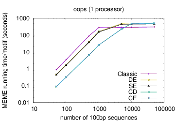

See these examples of how to use MEME.
Input
The name of a file containing the primary sequences in FASTA format, or the word stdin to indicate that the primary sequences should be read from standard input. Note that MEME does not attempt to detect the alphabet from the primary sequences so you should specify it with the -dna, -rna, -protein or -alph options. MEME also supports a modification to the FASTA format for weighting the primary sequences.
Output
MEME writes its output to files in a directory named
meme_out, which it creates if necessary. You can change the
output directory using the -o or -oc options.
The directory will contain:
meme.html- an HTML file that provides the results in an interactive, human-readable formatmeme.txt- a plain text file of the results for backwards compatibility with earlier versions of MEMEmeme.xml- an XML file that provides the results in a format designed for machine processinglogoN.png,.eps- PNG and EPS images files containing sequence logos for each of the motifs found by MEME (where N is the motif number)logo_rcN.png,.eps- (complementable alphabets only) PNG and EPS images files containing reverse-complement sequence logos for each of the motifs found by MEME (where N is the motif number)
{kind=link}
{kind=link}
MEME gives each motif it discovers a name, which is a consensus sequence that approximately describes the motif. Motif names are intended to be mnemonic only, and are not intended to be used for searching sequences for matches; use the position-specific probability matrix (PSPM) contained in each of the MEME output file formats for that purpose via programs such as FIMO and MAST.
Options
| Option | Parameter | Description | Default Behavior | ||||||||||||||||||||||||||||||
|---|---|---|---|---|---|---|---|---|---|---|---|---|---|---|---|---|---|---|---|---|---|---|---|---|---|---|---|---|---|---|---|---|---|
| Output | |||||||||||||||||||||||||||||||||
| -text | Output in text format only to standard output. | The program behaves as if -oc meme_out had
been specified. |
|||||||||||||||||||||||||||||||
| -brief | nbrief | If there are more than nbrief (primary) sequences, the size of MEME's output will be reduced by suppressing the inclusion of the sequence names, motif sites and scanned sites in MEME's HTML and XML outputs, and by suppressing the tables of sequence lengths, sites and block diagrams in MEME's text output. | A value of 1000 is used for nbrief. | ||||||||||||||||||||||||||||||
| Objective Function | |||||||||||||||||||||||||||||||||
| -objfun | classic| de| se| cd| ce| nc | This option is used to select the objective function that
MEME uses to select the width and number of sites in a motif,
to calculate the motif's statistical significance,
and to choose the best motif in the current iteration.
| MEME uses the Classic objective function. | ||||||||||||||||||||||||||||||
| -test | mhg| mbn| mrs | The statistical test used for computing motif enrichment when the objective function is specified as Differential Enrichment (-objfun de) or Selective Differential Enrichment (-objfun se). The three options cause MEME to use the the multiple hypergeometric test (mhg), the multiple binomial test (mbn), or the multiple rank-sum test (mrs), respectively. | MEME uses the multiple hypergeometric test with the de se objective functions. | ||||||||||||||||||||||||||||||
| -use_llr | Use the log-likelihood ratio method rather than the original E-value method for evaluating EM starting points when the objective function is set to classic. (See "Search for starting points" below for more details.) | The classic objective function uses the original E-value method for evaluating EM starting points. | |||||||||||||||||||||||||||||||
| Control Sequences, Hold-out Set and Efficiency Control | |||||||||||||||||||||||||||||||||
| -neg | control sequences | The name of a file containing control sequences in FASTA format. The control sequences must be in the same sequence alphabet as the primary sequences. | If the objective function requires control sequences and none are provided, MEME creates a set of control sequences by shuffling a copy of each primary sequence while preserving the frequencies of k-mers (see next option.) | ||||||||||||||||||||||||||||||
| -shuf | kmer | Preserve the frequencies of words of this size when shuffling primary sequences
to create control sequences. kmer
must be in the range [1,..,6].
Note: Using kmer = 1 is not advised if your sequences have been masked (e.g., using RepeatMasker) since the runs of "N"s in the masked sequence will be broken up by shuffling, resulting in shuffled sequences with very different statistical properties than the primary sequences. | MEME preserves the frequencies of words of length 2. | ||||||||||||||||||||||||||||||
| -hsfrac | hsfrac | The minimum fraction of the primary sequences that will be held out for
estimating the width, number of sites and significance of motifs
for certain objective functions (see above). A larger fraction of the
primary sequences may be held out if the size of the primary
sequences exceeds the value specified using the -searchsize option
(see below).
Note: The letter frequencies in the final motifs reported by MEME are based on all primary sequences, including those in the hold-out set(s). |
MEME reserves 0.5 (50%) of the primary sequences for estimating the width, number of sites and significance of motifs with objective functions that require hold-out set(s). | ||||||||||||||||||||||||||||||
| -cefrac | cefrac | The size of the central region (as a fraction of sequence length) that
MEME uses for computing central enrichment of motifs when the
Central Enrichment objective function
(-objfun ce)
is specified.
Note: Candidate starting points and EM are also restricted to this portion of the sequences with both the Central Enrichment (-objfun ce) and Central Distance (-objfun cd) objective functions. |
MEME uses a central region consisting of the middle 0.25 (25%) of each sequence with the Central Enrichment objective function. | ||||||||||||||||||||||||||||||
| -searchsize | searchsize | The maximum portion of the primary sequences (in letters) used by MEME
in searching for motifs.
To reduce running time, if the total size of the primary sequences exceeds
searchsize letters,
then MEME performs the search for motifs on a random
sample of the primary sequences of (approximately)
searchsize letters.
To ensure that the order of the primary sequences has no effect,
MEME orders the sequences alphabetically (by sequence, not sequence ID)
before choosing the sample (unless you specify
option -norand, see below).
Note 1: This option only affects the search for motifs; the motif letter frequencies and sites reported by MEME are based on all primary sequences. Note 2: MEME's running time will increase roughly as the square of searchsize. Note 3: Unless you specify searchsize as 0, no individual sequence may be longer than searchsize. Note 4: If you specify searchsize as 0, MEME will use all of the sequences (no sampling). This will cause the classic objective function to mostly closely emulate previous versions of MEME, and MEME will run very slowly on large datasets. |
MEME performs sampling if the primary sequences contain more than 100,000 letters. (This is done to improve MEME's running time.) | ||||||||||||||||||||||||||||||
| -norand | If your (primary) sequences are sorted in order of confidence (best to worst)
then you should select this option. It causes MEME not to randomize the order of the input sequences
if there are more than searchsize letters in the (primary) sequences
(see the -searchsize option, above).
Note: Using this option may make the results of MEME depend on the order of the (primary) sequences. |
The order of the input sequences is randomized before applying the -searchsize option. (This is done to ensure that MEME's results, by default, do not depend on the order of the input sequences.) | |||||||||||||||||||||||||||||||
| -csites | csites | Maximum number of sites used for computing the E-value
with the Classic objective function
(-objfun classic).
To reduce running time, if the total number of primary sequences exceeds
this value with site distribution models oops and
zoops,
then the search for motifs is performed on a random sample of the primary sequences
of (approximately) csites sequences.
If the site distribution model is anr, sequence sampling is not done,
but the maximum number of sites a motif may have is limited to csites
(unless this is overridden by the -maxsites
or -nsites options).
Note 1: This only affects the search for motifs; the motif letter frequencies and sites reported by MEME are based on all sequences. Note 2: MEME's running time will increase roughly as the cube of csites when it is larger than 10,000. Note 3: This option has no effect if the objective function is not Classic. |
With the Classic objective function, MEME performs sequence sampling if
there are more than 1000 primary sequences (site distribution
models oops and
zoops), or limits the total number of sites per motif to
1000 (site distribution model anr).
Note: You can suppress sequence sampling by setting searchsize to 0 using the -searchsize option, above. |
||||||||||||||||||||||||||||||
| -seed | seed | Random seed for shuffling and sampling sequences (see above). | MEME uses a random seed of 0. | ||||||||||||||||||||||||||||||
| Alphabet | |||||||||||||||||||||||||||||||||
| Strands & Palindromes | |||||||||||||||||||||||||||||||||
| -revcomp | Consider both the given strand and the reverse complement strand when searching for motifs in a complementable alphabet (ie DNA). | MEME searches for motifs of complementable alphabets on the given strand only. | |||||||||||||||||||||||||||||||
| -pal | This causes MEME to only look for palindromes in complementable datasets. During EM, MEME will average the letter frequencies in complementary columns of the motif (PSPM) together. For instance, if the width of the motif is 10, columns 1 and 10, 2 and 9, 3 and 8, etc., are averaged together. For DNA the averaging would combines the frequency of A in one column with T in the other, and the frequency of C in one column with G in the other. | MEME does not average the letter frequencies in complementary columns of motifs. | |||||||||||||||||||||||||||||||
| Contributing Site Distribution | |||||||||||||||||||||||||||||||||
| -mod | oops|zoops|anr | This option is used to describe the distribution of motif sites.
|
MEME assumes the Zero or One Occurrence Per Sequence model. | ||||||||||||||||||||||||||||||
| Number of Motifs | |||||||||||||||||||||||||||||||||
| -nmotifs | nmotifs | MEME will stop searching for motifs after finding nmotifs motifs. | MEME will find 1 motif. | ||||||||||||||||||||||||||||||
| -evt | ev | MEME will stop searching for motifs if the last motif found has an E-value > ev, or when 1000 motifs have been found. If you also specify option -nmotifs (above), MEME will stop searching if nmotifs have been found. | MEME will rely on other limits to decide when to stop searching for motifs. | ||||||||||||||||||||||||||||||
| -time | secs | MEME will stop searching for motifs if it has found at least 1 motif and it estimates that finding any more will cause the total running time to exceed secs seconds. | MEME will rely on other limits to decide when to stop searching for motifs. | ||||||||||||||||||||||||||||||
| Number of Motif Occurrences | |||||||||||||||||||||||||||||||||
| -nsites | nsites | When the motif site distribution model allows, MEME will only attempt to find motifs with nsites sites. Specifying this option is equivalent to setting the -minsites and -maxsites options to the same value. When the site distribution model is oops this is ignored and the number of sites is set to the number of primary sequences. | See the -minsites and -maxsites options for information on the default behavior. | ||||||||||||||||||||||||||||||
| -minsites | minsites | When the motif site distribution model allows, MEME will attempt to find motifs with at least minsites sites. When the site distribution model is oops this is ignored and the number of sites is set to the number of primary sequences. | The minimum number of sites is set to 2 when it is not otherwise defined by the use of the oops model or the -nsites option. | ||||||||||||||||||||||||||||||
| -maxsites | maxsites | When the motif site distribution model allows, MEME will attempt to find motifs with at most maxsites sites. When the site distribution model is oops this is ignored and the number of sites is set to the number of primary sequences. | When the site distribution model is zoops maxsites is set to the number of primary sequences. When the site distribution model is anr maxsites is set to 5 times the number of primary sequences. | ||||||||||||||||||||||||||||||
| -wnsites | weight | This controls the strength of the bias towards motifs with exactly the expected number of sites as defined by the -nsites, -minsites and -maxsites options. It is a number in the range [0..1). The closer to one it is, the stronger the bias towards motifs with exactly the expected number of sites. | The value of weight is set to 0.8. | ||||||||||||||||||||||||||||||
| Motif Width | |||||||||||||||||||||||||||||||||
| -w | w | Search for motifs with a width of w. | Search for motifs with widths between the range set by -minw and -maxw. | ||||||||||||||||||||||||||||||
| -minw | minw | Search for motifs with a width ≥ minw. | Searches for motifs with a minimum width of 8. | ||||||||||||||||||||||||||||||
| -maxw | maxw | Search for motifs with a width ≤ maxw. | Searches for motifs with a maximum width of 50. | ||||||||||||||||||||||||||||||
| -allw | Find starting points for EM for each possible motif width
from minw to maxw,
inclusive.
Note: Using this option with large motif width ranges will slow MEME substantially. |
MEME finds EM starting points only for widths in a geometric progression from minw to maxw and then refines the width of the motif after running EM. | |||||||||||||||||||||||||||||||
| -nomatrim | Do not adjust motif width using multiple alignments. | With the Classic objective function,
the motif is trimmed to avoid insertions and deletions.
Note: This is not done with the other objective functions, so this option has no effect with them. |
|||||||||||||||||||||||||||||||
| -wg | wg | The gap opening cost for creating the alignments used to trim the motif. | The opening cost for a gap is 11. | ||||||||||||||||||||||||||||||
| -ws | ws | The gap extension cost for creating the alignments used to trim the motif. | The extension cost for a gap is 1. | ||||||||||||||||||||||||||||||
| -noendgaps | Do not count end gaps in the alignments used to trim the motif. | End gaps are penalized like any other gap. | |||||||||||||||||||||||||||||||
| Background Sequence Model | |||||||||||||||||||||||||||||||||
| -bfile | bfile | The name of Markov background model file.
You can use a background model with MEME in order
to normalize for biased distribution of letters and groups of letters in your sequences.
A 0-order model adjusts for single letter biases, a 1-order model adjusts for
dimer biases (e.g., GC content in DNA sequences), etc.
The background model is used by MEME for four purposes:
Note that MEME uses only the 0-order portion (single letter frequencies) of the background model for purpose 4 for all objective functions other than classic, and for purposes 3 and 4 when the objective function is classic.
Note that if both strands are being considered, MEME will create a background model that averages the frequencies of letters (0-order) or words (higher order) and their reverse complements. |
A background model of the order requested (see -markov_order) is estimated from the primary sequences. | ||||||||||||||||||||||||||||||
| -markov_order | order | The (maximum) order of the Markov model to read from the background file
or to create from the primary sequences.
If the -bfile option is not specified,
MEME uses the fasta-get-markov program with a total
pseudocount of 0.1 to create a Markov model from the primary sequences.
|
MEME uses the 0-order Markov model from the background file, or creates a 0-order Markov model using an add-one prior from the primary sequences. | ||||||||||||||||||||||||||||||
| Position-Specific Priors | |||||||||||||||||||||||||||||||||
| -psp | PSP file | The name of a MEME position-specific priors file. This can be used to bias the search for motifs in MEME. The PSP file supplies a position-specific prior distribution on the location of motif sites in sequence(s) in the input dataset. | All motif sites are considered equally likely. | ||||||||||||||||||||||||||||||
| EM Algorithm | |||||||||||||||||||||||||||||||||
| -maxiter | maxiter | The number of iterations of EM to run from any starting point. EM is run for maxiter iterations or until convergence (see -distance, below) from each starting point. | MEME will use a maximum of 50 EM iterations from any starting point. | ||||||||||||||||||||||||||||||
| -distance | distance | MEME stops iterating EM when the change in the motif frequency matrix is less than distance. Change is defined as the euclidean distance between two successive frequency matrices. | The distance used for measuring convergence is 0.001. | ||||||||||||||||||||||||||||||
| -prior | dirichlet|dmix|mega|megap|addone | The type of prior to use.
|
When the prior is not selected:
|
||||||||||||||||||||||||||||||
| -b | b | The strength of the prior on model parameters: b = 0 means use intrinsic strength of prior for prior = dmix. |
|
||||||||||||||||||||||||||||||
| -plib | plib | The name of the file containing the Dirichlet mixtures prior library. |
The default value of plib depends on
the sequence alphabet.
|
||||||||||||||||||||||||||||||
| Selecting Starts for EM | |||||||||||||||||||||||||||||||||
| -spfuzz | fuzz | The fuzziness of sequence to theta mapping. The meaning of this parameter depends on the choice of mapping function as set by the -spmap option. |
The default value of fuzz depends on
the mapping function (see -spmap).
|
||||||||||||||||||||||||||||||
| -spmap | uni|pam | The mapping function to use for estimating theta.
|
The default mapping function depends on the sequence alphabet.
|
||||||||||||||||||||||||||||||
| -cons | consensus | (May be repeated.) Override the sampling of starting points and just use a
starting point derived from consensus.
This is useful when an actual occurrence of a motif is known and
can be used as the starting point for finding the motif. If this
option is specified N times, starting point sampling will be
suppressed for the first N motifs.
Note: With DNA and RNA sequences, motifs shorter than 6 can be difficult for MEME to find, so you may want to pad the consensus sequence with "N"s to width 6, e.g. -cons NGATAA rather than -cons GATAA. |
Refer to the -spmap option for the default behavior. | ||||||||||||||||||||||||||||||
| Misc | -p | np | Use faster, parallel version of MEME with np processors.
The parameter np may be a number or it
may be a quoted string starting with a number and followed by arguments
to the particular MPI run command for your installation (e.g., mpirun). |
Use a single processor. | |||||||||||||||||||||||||||||
| -maxsize | maxsize | Maximum allowed dataset size (in letters). You can set this in scripts to prevent very
large running times. A maxsize value of 0 means "no limit".
Note: Unlike previous versions of MEME, there is no limit on dataset size by default, so this option does not normally need to be used. |
No limit on dataset size. | ||||||||||||||||||||||||||||||
| -nostatus | Print no status messages to terminal. | Print minimal status messages to terminal. | |||||||||||||||||||||||||||||||
| -sf | sf | Print sf as name of sequence file. | Print actual file name. | ||||||||||||||||||||||||||||||
| -V | Print extensive status messages to terminal. | Print minimal status messages to terminal. | |||||||||||||||||||||||||||||||
MEME algorithm overview
MEME searches for motifs in a four step process:
First, MEME searches for words in the primary sequences that are likely to be good starting points for EM. Second, MEME runs EM to convergence from each such starting point. Third, after EM converges, MEME refines the width and depth (number of sites) of the motif. Finally, MEME performs a "soft" erase procedure that essentially erases all the sites of the best motif found proportional to the certainty that the site is real. MEME repeats the above four steps to find subsequent motifs until a stopping criterion is met, as specified in the "Number of Motifs" section above.Search for starting points. The search for starting points is over words that occur in the primary sequences. The search tests words in a geometric progression of widths from minw to maxw, inclusive. Each candidate word is tested for its likelihood as a good starting point for EM for finding a motif with (approximately) a given number of sites, testing separately for each value of nsites in a geometric progression from minsites to maxsites, inclusive. Starting points are scored by using them for one iteration of EM to produce an initial motif, and then scoring the resulting motif using an objective function. When the objective function is Classic or Numerically Correct, the score is an estimate of the E-value of the information content of the initial motif. When the objective function is Central Enrichment, the score is the number of sites of the initial motif in the central regions of the sequences. When the objective function is Central Distance, the score is the mean distance of the sites of the initial motif from the centers of the sequences. When the objective function is Differential Enrichment and Selective Enrichment, starting points are scored by optimizing the p-value of the motif objective function over the number of sites. With all objective functions, MEME uses the highest scoring candidate word for each combination of width and number of sites tested (or the optimal number of sites for Differential Enrichment and Selective Enrichment) as a starting point from which to initialize EM.
Expectation Maximization. The EM algorithm is used to generate motif models that are optimal with respect to the primary sequences in a maximum likelihood sense. EM is prone to getting stuck in local optima, so it is important to start it from several good, initial motif models. Thus, MEME converts each candidate starting point to an initial motif model and runs EM to convergence.
Motif Refinement.
MEME subjects each motif found by EM to further refinement using the selected objective
function, selecting the as the final motif the one with the best value of the objective function.
This refinement is over both the width and depth (number of sites) of the motif.
To compute the objective function on a motif, MEME predicts all possible sites using
the motif, sorts them, and then applies the objective function to the sorted sites.
With the Classic and Numerically Correct objective functions,
MEME tests all possible sub-motifs consisting of consecutive columns of the motif in this way.
With the SE objective function, trims the motif to a single width by
selecting the highest nkeep columns and masking
the remainder by setting them to the background frequencies,
where nkeep = max(6, 6 + floor(width-6/3).
MEME uses a greedy search over sub-motifs with high information content.
First, it sorts the columns of the motif by information content.
Then MEME tests the sub-motifs spanned
by the first 2, 3, ... etc. columns. Consequently, if the first and last motif
columns have the highest information content, only the original motif is tested.
With the Classic and Numerically Correct objective
functions, MEME also further shortens each candidate submotif using a procedure
that minimizes the number of gaps in a multiple alignment of the motifs sites.
Motif Erasing. To enable EM to find additional motifs, MEME "erases" the predicted sites of the last motif found. This is done in a "soft" fashion by adjusting a weight associated each position in the primary sequences, reducing it in proportion to its likelihood as the the start of a site for the motif. These weights are used when computing the scores of both starting points and final motifs, and a low weight causes a sequence position to be less likely to be chosen as a starting point and reduces its contribution to the motif model during EM.
Motif Objective Function
MEME uses an objective function on motifs when refining a motif, and to select the "best" motif from among all the refined motifs obtained from different starting points for EM. MEME supports several choices of objective function, which are described above under the -objfun option. Each of the objective functions is based on the significance (E-value) of the motif according to a statistical test.
The Classic objective function is based on the statistical significance of the log likelihood ratio (LLR) of the occurrences of the motif. The E-value of the motif is an estimate of the number of motifs (with the same width and number of occurrences) that would have equal or higher log likelihood ratio if the input sequences had been generated randomly according to the (0-order portion of the) background model. An approximate algorithm is used to estimate the probability of the observed (or better) LLR, and this p-value is then multiplied by an estimate of the number of possible motifs to give the E-value.
The Differential Enrichment and Selective Enrichment objective functions are based on the ability of the motif to discriminate predicted sites in the primary sequences from those in the control sequences. The motif is used to predict sites in a held-out subset of the primary sequences, and in the control sequences. The sites are sorted by their likelihood ratio scores. A statistical test is then applied to the sites in the sorted list above and below each possible score threshold. With the Selective Enrichment objective function, the best p-value among the tests is then multiplied by the total number of motifs and thresholds tested to give the E-value of the final motif. With the Discriminative Enrichment objective function, the best motif is selected as above, and then a second hold-out set of primary sequences is used for computing the final E-value. The statistical validity of the E-value is ensured by basing it on held-out primary sequences that are not used in finding the motif.
The Central Enrichment and Central Distance objective functions are based on the central enrichment of motif in the central region of the (equal-length) primary sequences. The motif is used to predict sites in each of the primary sequences, and the sites are sorted by their likelihood ratio scores. With the Central Enrichment objective function, the binomial test is then applied to the counts of the number of times the highest-scoring site occurs in the central vs. the flanking regions of the sequences. With the Central Distance objective function, the average distance of the best site in each sequence to the center of the sequence is computed, and its significance is estimated using the Bates distribution.
Multiple Alignment Trimming (Classic objective function only)
Once a candidate motif has been found the multiple alignment method performs a separate pairwise alignment of the site with the highest probability and each other possible site (the alignment includes width/2 positions on either side of the sites).
The pairwise alignments are then combined and the method determines the widest section of the motif with no insertions or deletions. If this alignment is shorter than minw, it tries to find an alignment allowing up to one insertion/deletion per motif column. This continues (allowing up to 2, 3 ... insertions/deletions per motif column) until an alignment of width at least minw is found.
The switches -nomatrim, -wg, -ws and -noendgaps control trimming of motifs using the multiple alignment method. Specifying the -nomatrim option causes MEME to skip trimming altogether. The -wg and -ws options set the costs of including gaps in the alignments and the -noendgaps allows gaps at the beginning and end to be treated specially.
After trimming, the number of occurrences is then adjusted to maximize the motif E-value, and then the motif width is further shortened to optimize the E-value.
Running time on large inputs
MEME's running time depends on the type of model you have chosen: oops < zoops < anr. Running time also depends on the objective function you have chosen: ce,cd < de, se < classic « nc, for small datasets; the order reverses (except for nc) for very large datasets. Running time also is affected by the options -csites, -searchsize, -hsfrac, or -cefrac. Running time is shorter with smaller alphabets (e.g., DNA) compared to with larger alphabets (e.g., Protein). Running time increases with the number of motif widths that MEME considers (see the options -w, -maxw, -minw, and -allw). The table below gives more details on the relationship between sequence dataset size and MEME's running time with large datasets.
| objective function | running time per motif (for large datasets) |
|---|---|
| classic, nc | approximately nlog(n) for motifs with up to csites sites, where n is the size of the sequence file; thereafter, the running time is essentially constant |
| de, se | approximately nlog(n) for sequence files with up to searchsize divided by hsfrac letters, where n is the size of the (primary) sequence file; thereafter, the running time is essentially constant |
| ce, cd | approximately nlog(n) for sequence files with up to searchsize divided by cefrac letters, where n is the size of the (primary) sequence file; thereafter, the running time is essentially constant |
The following table shows actual running times for MEME on DNA datasets containing different numbers of 100bp sequences on a 4 GHz Intel Core i7 processor with 16GB of memory. MEME was run using either one or 6 processors (option -p), different models and objective functions (options -mod and -objfun), and the option -revcomp. (The parallel version of MEME scales up to about 128 processors. Please see https://academic.oup.com/bioinformatics/article/12/4/303/183600 for a discussion of the parallel version of MEME.)
| processors | OOPS model | ZOOPS model | ANR model |
|---|---|---|---|
| 1 |  | ||
| 6 |  |
 |
Examples
The following examples use data files provided in this release of the MEME Suite (in the tests directory).
-
A simple DNA example:
meme crp0.s -dna -mod oops -palMEME looks for a single motif in the file
crp0.swhich contains DNA sequences in FASTA format. The oops site distribution model is used so MEME assumes that every sequence contains exactly one occurrence of the motif. The palindrome switch is given so the motif model (PSPM) is converted into a palindrome by combining corresponding frequency columns. MEME automatically chooses the best width for the motif in this example since no width was specified. -
Searching for motifs on both DNA strands:
meme crp0.s -dna -mod oops -revcompThis is like the previous example except that the -revcomp switch tells MEME to consider both DNA strands, and the -pal switch is absent so the palindrome conversion is omitted. When DNA uses both DNA strands, motif occurrences on the two strands may not overlap. That is, any position in the sequence given in the input sequences may be contained in an occurrence of a motif on the positive strand or the negative strand, but not both.
-
A fast DNA example:
meme crp0.s -dna -mod oops -revcomp -w 20This example differs from example 1) in that MEME is told to only consider motifs of width 20. This causes MEME to execute about 10 times faster. The
-wswitch can also be used with protein datasets if the width of the motifs is known in advance. -
Using a higher-order background model:
meme INO_up800.s -dna -mod anr -revcomp -bfile yeast.nc.6.freqIn this example we use
-mod anrand-bfile yeast.nc.6.freq. This specifies that- the motif may have any number of occurrences in each sequence, and,
- the Markov model specified in yeast.nc.6.freq is used as the background model. This file contains a fifth-order Markov model for the non-coding regions in the yeast genome.
Using a higher order background model can often result in more sensitive detection of motifs. This is because the background model more accurately models non-motif sequence, allowing MEME to discriminate against it and find the true motifs.
-
A simple protein example:
meme lipocalin.s -mod oops -maxw 20 -nmotifs 2The
-dnaswitch is absent, so MEME assumes the filelipocalin.scontains protein sequences. MEME searches for two motifs each of width less than or equal to 20. (Specifying-maxw 20makes MEME run faster since it does not have to consider motifs longer than 20.) Each motif is assumed to occur in each of the primary sequences because the oops distribution model is specified. -
Another simple protein example:
meme farntrans5.s -mod anr -maxw 40 -maxsites 50MEME searches for a motif of width up to 40 with up to 50 occurrences in the entire set of input sequences. The anr site distribution model is specified, which allows each motif to have any number of occurrences in each sequence. This dataset contains motifs with multiple repeats of motifs in each sequence. This example is fairly time consuming due to the fact that the time required to initialize the motif probability tables is proportional to maxw × maxsites.
-
A much faster protein example:
meme farntrans5.s -mod anr -w 10 -maxsites 30 -nmotifs 3This time MEME is constrained to search for three motifs of width exactly ten. The effect is to break up the long motif found in the previous example. The -w switch forces motifs to be exactly ten letters wide. This example is much faster because, since only one width is considered, the time to build the motif probability tables is only proportional to maxsites.
-
Splitting the sites into three:
meme farntrans5.s -mod anr -maxw 12 -nsites 24 -nmotifs 3This forces each motif to have 24 occurrences, exactly, and be up to 12 letters wide.
-
A larger protein example with E-value cutoff:
meme adh.s -mod zoops -nmotifs 20 -evt 0.01In this example, MEME looks for up to 20 motifs, but stops when a motif is found with E-value greater than 0.01. Motifs with large E-values are likely to be statistical artifacts rather than biologically significant.